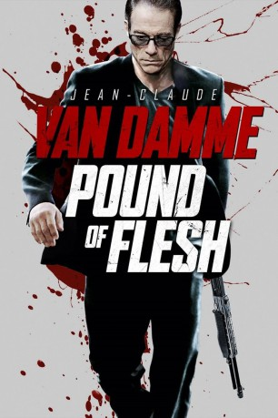
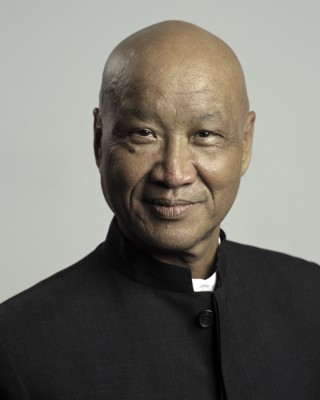
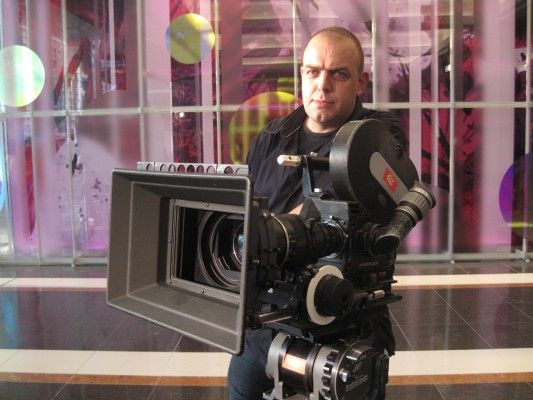
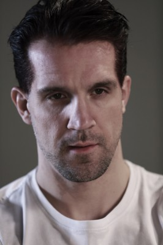

#2009 Pound of Flesh
 gesehen am 22.09.2015
gesehen am 22.09.2015
 
 IMDB-Wertung: 5.2 / 10
IMDB-Wertung: 5.2 / 10  Metascore: 41
Metascore: 41 
Der ehemalige Geheimagent Deacon (Jean-Claude Van Damme) begibt sich nach China, weil er seiner im Sterben liegenden Nichte Isabella (Adele Baughan) mit einer Nierenspende das Leben retten will. Vor Ort lässt er sich von einer hübschen Frau (Charlotte Peters) verführen, nachdem er ihr eigentlich zu Hilfe geeilt war. Kurze Zeit später wacht er jedoch schmerzerfüllt und dürftig zugenäht in einer Badewanne mit Eiswasser auf. Seine Niere wurde auf nicht gerade zimperliche Art und Weise entfernt, einen Tag vor der angesetzten Operation. Angepisst und wütend sinnt er auf Rache und macht Jagd auf die Organhändler. Dafür muss er sich nicht nur an die dunkelsten Orte der Stadt begeben, auch muss es er sich beeilen, denn seiner Nichte geht es zunehmend schlechter. Ein blutiger Wettlauf gegen die Zeit beginnt.
Jahr: 2015
Dauer: 104 Minuten
FSK: 18
Land: Kanada Studio: Splendid FilmTonspuren: DD5.1 - ,
Untertitel: Deutsch, Englisch,
Auflösung: 1080p (1920x1080) Größe: 8120 MB
Genre: Action, Thriller
Regisseur: Ernie Barbarash
Drehbuch: Joshua James
Soundtrack: Paul Michael Thomas
Darsteller:
 Jean-Claude Van Damme als Deacon Lyle
Jean-Claude Van Damme als Deacon Lyle John Ralston als George Lyle
John Ralston als George Lyle Aki Aleong als Kung
Aki Aleong als Kung- Charlotte Peters als Ana Riley
 Darren Shahlavi als Drake
Darren Shahlavi als Drake- Adele Baughan als Isabella Lyle
- Jason Tobin als Liam
-  Andrew Ng als Father Fong
-  Mike Leeder als Boris
-  Kevin Lee als Club Bouncer , uncredited
 Temur Mamisashvili als Show Fighter , uncredited
Temur Mamisashvili als Show Fighter , uncredited- Brahim Achabbakhe als Nardo
- Marsha Yuan als Bette
- Terese Cilluffo als Connie
- James Houghton als Young Simon
 Philippe Joly als Zoltan
Philippe Joly als Zoltan- David P. Booth als Simon Rants
- Danning Fu als Maitre D'
- Deng Ziyi als Taxi Driver
- Karry Wang als TF Boy #1
- Roy Wang als TF Boy #2
- Jackson Yi als TF Boy #3
- Ryan 'Ranga' Pyne als Yevgeny
- Eric Heise als Doctor , uncredited
Datei: X:\FSK18-2015\Pound of Flesh (2015, FSK18, 1920x1080).mkv seit 22.09.2015
Festplatte: FSK18
 Es gibt insgesamt 23 Filme in der Gruppe 'FSK18-2015'
Es gibt insgesamt 23 Filme in der Gruppe 'FSK18-2015'